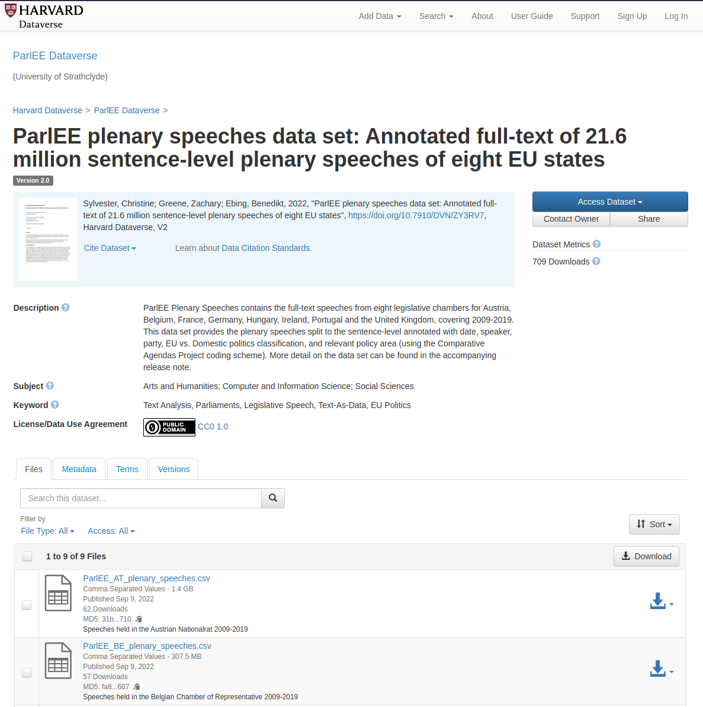

── Attaching core tidyverse packages ──────────────────────── tidyverse 2.0.0 ──
✔ dplyr 1.1.2 ✔ readr 2.1.4
✔ forcats 1.0.0 ✔ stringr 1.5.0
✔ ggplot2 3.4.2 ✔ tibble 3.2.1
✔ lubridate 1.9.2 ✔ tidyr 1.3.0
✔ purrr 1.0.1
── Conflicts ────────────────────────────────────────── tidyverse_conflicts() ──
✖ dplyr::filter() masks stats::filter()
✖ dplyr::lag() masks stats::lag()
ℹ Use the conflicted package (<http://conflicted.r-lib.org/>) to force all conflicts to become errorsWorkshop Automated Content Analysis
Session 2: Text Scaling and Regression Models
Introduction
The main insight from this workshop should be that in order to analyse text with a computer, we turn the words into numbers, so the computer can understand them. Once this is done, many methods in computational analysis of text are just simple statistics.
Turning words into a document-feature-matrix
As data source for this session we use the ParlEE plenary speeches data set of parliamentary speeches from the Harvard dataverse:

We use the tidytext package in combination with the tidyverse to make the process more visible. (An alternative would be quanteda, which is also a really good package and often faster and with many sensible defaults.)
library(tidytext)
plenary_speeches_raw <- rio::import("data/ParlEE_AT_plenary_speeches.csv")plenary_speeches_raw |>
head() instance_id date agenda speechnumber sentencenumber
1 1 21/01/2009 Beginn der Sitzung 1 1
2 2 21/01/2009 Beginn der Sitzung 1 2
3 3 21/01/2009 Beginn der Sitzung 1 3
4 4 21/01/2009 Beginn der Sitzung 1 4
5 5 21/01/2009 Beginn der Sitzung 1 5
6 6 21/01/2009 Beginn der Sitzung 1 6
speaker party
1 Barbara Prammer SPÖ
2 Barbara Prammer SPÖ
3 Barbara Prammer SPÖ
4 Barbara Prammer SPÖ
5 Barbara Prammer SPÖ
6 Barbara Prammer SPÖ
text
1 Guten Morgen, meine Damen und Herren!
2 Ich eröffne die Sitzung.
3 Die Amtlichen Protokolle der 8. und 9. Sitzung vom 10.
4 Dezember 2008 sind in der Parlamentsdirektion aufgelegen und unbeanstandet geblieben.
5 Als verhindert gemeldet sind die Abgeordneten Mag. Muttonen, Praßl, Herbert, Jannach und Dr. Winter.
6 Einlauf
parliament iso3country chair eu policyarea cmp_party
1 AT-Nationalrat AUS TRUE 0 12 42320
2 AT-Nationalrat AUS TRUE 0 20 42320
3 AT-Nationalrat AUS TRUE 0 20 42320
4 AT-Nationalrat AUS TRUE 0 20 42320
5 AT-Nationalrat AUS TRUE 0 20 42320
6 AT-Nationalrat AUS TRUE 0 10 42320Before doing the actual analysis we do some cleaning and preprocessing (as you almost always do). In this case, the speeches are split into sentences, but we want to analyse whole speeches at once in this case.
plenary_speeches <- plenary_speeches_raw |>
mutate(date = lubridate::dmy(date)) |>
filter(date >= "2017-11-09",
date <= "2019-10-22") |> # select XXVI. Gesetzgebungsperiode: 09.11.2017 – 22.10.2019
group_by(date, speechnumber, speaker, agenda, party, chair) |> # go from sentence to speech level
summarise(text = paste(text, collapse = "\n\n"), .groups = "drop") |>
mutate(speech_id = row_number())For this analysis it makes sense to remove stopwords (words which are used often in texts but only contain little meaning). Keeping the words would obscure some more valuable patterns. This would lead to a high number of more connections that are most likely unimportant to use. Second, keeping stopwords would drive up the computing time. Therefore, we will delete stopwords. Let’s have a look at the off-the-shelf set:
stopwords::stopwords("de") [1] "aber" "alle" "allem" "allen" "aller" "alles"
[7] "als" "also" "am" "an" "ander" "andere"
[13] "anderem" "anderen" "anderer" "anderes" "anderm" "andern"
[19] "anderr" "anders" "auch" "auf" "aus" "bei"
[25] "bin" "bis" "bist" "da" "damit" "dann"
[31] "der" "den" "des" "dem" "die" "das"
[37] "daß" "derselbe" "derselben" "denselben" "desselben" "demselben"
[43] "dieselbe" "dieselben" "dasselbe" "dazu" "dein" "deine"
[49] "deinem" "deinen" "deiner" "deines" "denn" "derer"
[55] "dessen" "dich" "dir" "du" "dies" "diese"
[61] "diesem" "diesen" "dieser" "dieses" "doch" "dort"
[67] "durch" "ein" "eine" "einem" "einen" "einer"
[73] "eines" "einig" "einige" "einigem" "einigen" "einiger"
[79] "einiges" "einmal" "er" "ihn" "ihm" "es"
[85] "etwas" "euer" "eure" "eurem" "euren" "eurer"
[91] "eures" "für" "gegen" "gewesen" "hab" "habe"
[97] "haben" "hat" "hatte" "hatten" "hier" "hin"
[103] "hinter" "ich" "mich" "mir" "ihr" "ihre"
[109] "ihrem" "ihren" "ihrer" "ihres" "euch" "im"
[115] "in" "indem" "ins" "ist" "jede" "jedem"
[121] "jeden" "jeder" "jedes" "jene" "jenem" "jenen"
[127] "jener" "jenes" "jetzt" "kann" "kein" "keine"
[133] "keinem" "keinen" "keiner" "keines" "können" "könnte"
[139] "machen" "man" "manche" "manchem" "manchen" "mancher"
[145] "manches" "mein" "meine" "meinem" "meinen" "meiner"
[151] "meines" "mit" "muss" "musste" "nach" "nicht"
[157] "nichts" "noch" "nun" "nur" "ob" "oder"
[163] "ohne" "sehr" "sein" "seine" "seinem" "seinen"
[169] "seiner" "seines" "selbst" "sich" "sie" "ihnen"
[175] "sind" "so" "solche" "solchem" "solchen" "solcher"
[181] "solches" "soll" "sollte" "sondern" "sonst" "über"
[187] "um" "und" "uns" "unse" "unsem" "unsen"
[193] "unser" "unses" "unter" "viel" "vom" "von"
[199] "vor" "während" "war" "waren" "warst" "was"
[205] "weg" "weil" "weiter" "welche" "welchem" "welchen"
[211] "welcher" "welches" "wenn" "werde" "werden" "wie"
[217] "wieder" "will" "wir" "wird" "wirst" "wo"
[223] "wollen" "wollte" "würde" "würden" "zu" "zum"
[229] "zur" "zwar" "zwischen" We also remove numbers and URLs, which are hard to make sense of out of context.
plenary_speeches_tidy <- plenary_speeches |>
unnest_tokens(
output = "word",
input = "text",
token = "words"
) |>
filter(!word %in% stopwords::stopwords("de")) |>
filter(str_detect(word, "[A-z]")) # remove features that consist only of numbers
plenary_speeches_tidy |>
head()# A tibble: 6 × 8
date speechnumber speaker agenda party chair speech_id word
<date> <int> <chr> <chr> <chr> <lgl> <int> <chr>
1 2017-11-09 1 Doris Bures Beginn der Si… SPÖ TRUE 1 geeh…
2 2017-11-09 1 Doris Bures Beginn der Si… SPÖ TRUE 1 damen
3 2017-11-09 1 Doris Bures Beginn der Si… SPÖ TRUE 1 herr…
4 2017-11-09 1 Doris Bures Beginn der Si… SPÖ TRUE 1 gemäß
5 2017-11-09 1 Doris Bures Beginn der Si… SPÖ TRUE 1 abs
6 2017-11-09 1 Doris Bures Beginn der Si… SPÖ TRUE 1 gesc…We can now look at the data in a document-feature-matrix, named like this since documents are the rows of the matrix and features (words and other characters) are the columns:
plenary_speeches_dfm <- plenary_speeches_tidy |>
count(speech_id, word) |>
cast_dfm(document = speech_id, term = word, value = n)
plenary_speeches_dfmDocument-feature matrix of: 14,167 documents, 91,946 features (99.90% sparse) and 0 docvars.
features
docs abs anlässlich beziehungsweise damen erste eröffne eröffnen führen
1 1 1 1 1 1 1 1 1
2 0 0 0 2 1 0 0 0
3 2 0 0 0 0 0 0 0
4 1 0 0 0 0 0 0 0
5 2 0 0 0 0 0 0 0
6 0 0 0 1 0 0 0 0
features
docs gedenkworte geehrten
1 1 1
2 0 2
3 0 0
4 0 0
5 0 0
6 0 1
[ reached max_ndoc ... 14,161 more documents, reached max_nfeat ... 91,936 more features ]To check out this corpus a bit we can have a quick look at the most often occurring words:
top_words <- plenary_speeches_tidy |>
count(word, sort = TRUE)
top_words |>
head(20)# A tibble: 20 × 2
word n
<chr> <int>
1 dass 37657
2 herr 14790
3 frau 11744
4 schon 8976
5 bitte 8936
6 ja 8871
7 mehr 8828
8 österreich 8022
9 gibt 8005
10 ganz 7729
11 herren 7460
12 damen 7334
13 menschen 6651
14 kollegen 6551
15 geht 6529
16 wort 6197
17 heute 5649
18 sagen 5441
19 immer 5430
20 kolleginnen 5304Scaling
wordscores - supervised scaling
plenary_parties_dfm <- plenary_speeches_tidy |>
count(party, word) |>
filter(!party %in% c("", "independent", "Independent")) |>
cast_dfm(document = party, term = word, value = n)
plenary_parties_dfm |>
quanteda::print(max_ndoc = 9, max_nfeat = 20)Document-feature matrix of: 6 documents, 85,767 features (65.99% sparse) and 0 docvars.
features
docs 100b 100c 10a 123a 124b 12a 136a 137b 137c 13a 14a 15a 15avereinbarung
FPÖ 2 2 1 1 2 1 3 3 6 5 10 26 1
Grüne 0 0 0 0 0 0 0 0 0 0 0 0 0
JETZT 0 0 0 0 0 2 0 0 0 0 2 10 0
NEOS 0 0 4 0 0 0 0 0 0 2 0 35 0
SPÖ 4 4 0 0 2 0 0 0 0 2 11 36 1
ÖVP 14 14 3 0 0 2 0 0 0 0 1 46 0
features
docs 16jährige 17a 17x 18jährige 18m 1920er 1930er
FPÖ 1 2 1 1 1 1 1
Grüne 0 0 0 0 0 0 1
JETZT 0 2 0 0 0 0 0
NEOS 0 0 0 0 0 0 1
SPÖ 0 0 0 0 0 1 2
ÖVP 0 5 1 0 0 0 0
[ reached max_nfeat ... 85,747 more features ]scores <- tribble(
~party, ~score,
"FPÖ", 1,
"Grüne", 10,
"JETZT", NA,
"NEOS", NA,
"SPÖ", NA,
"ÖVP", NA
)library(quanteda)Package version: 3.3.0
Unicode version: 15.0
ICU version: 72.1Parallel computing: 12 of 12 threads used.See https://quanteda.io for tutorials and examples.library(quanteda.textplots)
library(quanteda.textmodels)
plenary_parties_ws <- textmodel_wordscores(plenary_parties_dfm,
scores$score[match(docnames(plenary_parties_dfm), scores$party)])plenary_parties_scores <- predict(plenary_parties_ws)Warning: 45694 features in newdata not used in prediction.textplot_scale1d(plenary_parties_scores)
textplot_scale1d(plenary_parties_ws,
margin = "features",
highlighted = c("afrikanern", "asyllösung", "russlands", "österreich", "menschen"))
summary(plenary_parties_ws) # Calculates summary statistics of the plenary_parties_ws object
Call:
textmodel_wordscores.dfm(x = plenary_parties_dfm, y = scores$score[match(docnames(plenary_parties_dfm),
scores$party)])
Reference Document Statistics:
score total min max mean median
FPÖ 1 373111 0 7346 4.3503 0
Grüne 10 16413 0 386 0.1914 0
JETZT NA 139655 0 2885 1.6283 0
NEOS NA 196253 0 5149 2.2882 0
SPÖ NA 440349 0 9073 5.1342 0
ÖVP NA 448284 0 8918 5.2268 0
Wordscores:
(showing first 30 elements)
100b 100c 10a 123a 124b
1.000 1.000 1.000 1.000 1.000
12a 136a 137b 137c 13a
1.000 1.000 1.000 1.000 1.000
14a 15a 15avereinbarung 16jährige 17a
1.000 1.000 1.000 1.000 1.000
17x 18jährige 18m 1920er 1930er
1.000 1.000 1.000 1.000 9.621
1960er 1970er 1980er 1990er 19jährige
1.000 1.000 1.000 1.000 1.000
1a 1b 1c 1d 1fi
1.000 1.000 1.000 1.000 1.000 word_scores <- coef(plenary_parties_ws) |> # Creates a vector of coefficients from the plenary_parties_ws object
as_tibble(rownames = "word") |> # Converts the vector to a tibble with the rownames set to "word"
rename(score = value) |> # Renames the value column to "score"
left_join(top_words, by = "word") # Joins the top_words tibble to the word_scores tibble on the "word" column
word_scores |>
arrange(-n)# A tibble: 40,073 × 3
word score n
<chr> <dbl> <int>
1 dass 5.90 37657
2 herr 4.64 14790
3 frau 3.14 11744
4 schon 4.40 8976
5 bitte 1.61 8936
6 ja 5.91 8871
7 mehr 5.03 8828
8 österreich 6.45 8022
9 gibt 5.31 8005
10 ganz 4.28 7729
# ℹ 40,063 more rowsword_scores |>
arrange(-score)# A tibble: 40,073 × 3
word score n
<chr> <dbl> <int>
1 1920erund 10 1
2 a4 10 3
3 abdriftende 10 1
4 abdulaziz 10 10
5 abendlandes 10 6
6 abgeordnetenwahl 10 1
7 abgeputzt 10 1
8 abgeschlagen 10 3
9 abgeschreckt 10 1
10 abgesperrt 10 1
# ℹ 40,063 more rowsword_scores |>
arrange(score)# A tibble: 40,073 × 3
word score n
<chr> <dbl> <int>
1 100b 1 20
2 100c 1 20
3 10a 1 8
4 123a 1 1
5 124b 1 4
6 12a 1 5
7 136a 1 3
8 137b 1 3
9 137c 1 6
10 13a 1 11
# ℹ 40,063 more rowswordfish - unsupervised scaling
Quanteda also allows for unsupervised scaling.
set.seed(1)
plenary_parties_wf <- textmodel_wordfish(plenary_parties_dfm, sparse = TRUE)
textplot_scale1d(plenary_parties_wf)
textplot_scale1d(plenary_parties_wf, margin = "features")
Wordfish automatically scales all documents according to an underlying latent variable (the beta), which is assumed to correspond to the most interesting dimension in the data.
word_fish_scores <- coef(plenary_parties_wf)$features |> # Creates a vector of coefficients from the plenary_parties_ws object
as_tibble(rownames = "word") |> # Converts the vector to a tibble with the rownames set to "word"
left_join(top_words, by = "word")
word_fish_scores |>
arrange(-n)# A tibble: 85,767 × 4
word beta psi n
<chr> <dbl> <dbl> <int>
1 dass 0.0873 8.60 37657
2 herr -0.157 7.59 14790
3 frau -0.280 7.29 11744
4 schon 0.0759 7.19 8976
5 bitte -0.891 6.58 8936
6 ja 0.239 7.24 8871
7 mehr 0.0631 7.17 8828
8 österreich -0.0145 6.99 8022
9 gibt 0.109 7.07 8005
10 ganz 0.0227 7.01 7729
# ℹ 85,757 more rowsword_fish_scores |>
arrange(-beta)# A tibble: 85,767 × 4
word beta psi n
<chr> <dbl> <dbl> <int>
1 kriegsmaterial 6.23 -3.56 10
2 waffenembargo 5.58 -3.07 11
3 außenwirtschaftsgesetz 5.49 -3.12 7
4 kriegsmaterialgesetz 5.49 -3.12 10
5 pistolen 5.04 -2.71 7
6 ankara 4.89 -2.43 8
7 false 4.76 -2.32 8
8 globalisierungsverlierer 4.76 -2.32 8
9 bumsti 4.76 -2.32 8
10 flag 4.76 -2.32 9
# ℹ 85,757 more rowsword_fish_scores |>
arrange(beta)# A tibble: 85,767 × 4
word beta psi n
<chr> <dbl> <dbl> <int>
1 zeugenperson -6.13 -5.18 32
2 k.c -5.70 -4.95 17
3 fotograf -5.61 -4.90 16
4 zeitversetzt -5.54 -4.20 30
5 judo -5.52 -4.86 15
6 sitzungstag -5.43 -3.52 52
7 nationalrätin -5.43 -4.13 28
8 weinwirtschaft -5.39 -4.78 14
9 schülergruppe -5.20 -4.69 12
10 26a -5.08 -4.63 11
# ℹ 85,757 more rowsExercise Tasks: scaling
- Load a dataset of your choice into R (e.g., WhatsApp data, the CCS Lab descriptions, the Kaggle Twitter dataset)
- Get the most frequent 500 words from your data
- Use
textmodel_wordfishyour data to scale document(groups) - Use
textmodel_scoresto find proximity of document(groups) in your data, given two “extremes”
Regression
In this section, we will use supervised machine learning (SML) to predict continuous values that are associated with text data. SML can be divided into two types
- A classification model predicts a class label or group membership.
- A regression model predicts a numeric or continuous value.
Most people think about classification when they hear SML, but it is actually possible to use standard algorithms that you would usually think of as statistics to predict continuous rather than categorical variables. In the ParlEE dataset, the date comes to mind as something we could try to predict. Let’s have a look:
plenary_speeches_tidy |>
distinct(speech_id, .keep_all = TRUE) |>
count(date = lubridate::floor_date(date, "months")) |> # used to make plot easier to read
ggplot(aes(x = date, y = n)) +
geom_col() +
labs(x = NULL, y = NULL)
To make the variable easier to interpret, we convert the date into days since the first session using a small function:
day_diff <- function(dates) {
first_date <- min(dates)
as.integer(dates - first_date, units = "days")
}
# let's test this
day_diff(as.Date(c("2023-01-01", "2023-02-01")))[1] 0 31plenary_speeches_tidy_mc <- plenary_speeches_tidy |>
mutate(day_nr = day_diff(date))
plenary_speeches_tidy_mc |>
distinct(speech_id, .keep_all = TRUE) |>
count(day_nr) |>
ggplot(aes(x = day_nr, y = n)) +
geom_col() +
labs(x = NULL, y = NULL)
It’s not as easy to look at, but will work for our purposes. Next, we need to select some independent variables. I use the 1,000 most prevalent words and turn our long format data into the wide format the regression function expects:
top_words_chr <- top_words |>
slice_head(n = 1000) |>
pull(word)
plenary_speeches_tidy_mc_dfm <- plenary_speeches_tidy_mc |>
filter(word %in% top_words_chr) |>
count(word, speech_id, day_nr) |>
pivot_wider(names_from = word, values_from = n, values_fill = 0)
plenary_speeches_tidy_mc_dfm# A tibble: 14,154 × 1,002
speech_id day_nr a ab abgelehnt abgeordnete abgeordneten abgeordneter
<int> <int> <int> <int> <int> <int> <int> <int>
1 7 0 1 0 0 0 1 0
2 27 0 1 1 0 1 1 0
3 66 0 2 0 0 0 0 0
4 69 34 20 0 0 0 18 0
5 70 34 2 0 0 1 3 0
6 72 34 2 0 0 0 2 0
7 132 34 8 0 0 0 7 0
8 142 34 1 0 0 0 0 0
9 181 34 1 0 0 0 0 0
10 183 34 2 0 0 0 2 0
# ℹ 14,144 more rows
# ℹ 994 more variables: abkommen <int>, abs <int>, abschaffung <int>,
# abschließend <int>, absolut <int>, abstimmung <int>,
# abänderungsantrag <int>, aktion <int>, aktuellen <int>, all <int>,
# allein <int>, allerdings <int>, andererseits <int>, anfang <int>,
# anfrage <int>, angenommen <int>, angesprochen <int>, angst <int>,
# anliegen <int>, anschauen <int>, anspruch <int>, antrag <int>, …This is exactly the same cast_dfm function above, but it produces a normal data.frame instead of a sparse matrix.
The idea of machine learning is to predict some new cases. We can evaluate the performance of a model by removing some cases beforehand and then testing the model against the true value of these test cases.
set.seed(1)
training_ids <- plenary_speeches_tidy_mc_dfm |>
slice_sample(prop = 0.8) |>
pull(speech_id)
training_data <- plenary_speeches_tidy_mc_dfm |>
filter(speech_id %in% training_ids)
test_data <- plenary_speeches_tidy_mc_dfm |>
filter(!speech_id %in% training_ids)We use the normal lm() function on the data with day_nr as dependant and everything else (except speech_id) as independent variables:
model <- lm(day_nr ~ ., data = select(training_data, -speech_id))
# you can run summary for fun but it will print almost all words
# summary(model)One interesting side effect of this is that the coefficients tell us which words can be used to predict an early or late speech:
coef_df <- coef(model) |>
as_tibble(rownames = "coef")|>
filter(coef != "(Intercept)")
coef_df |>
arrange(value)# A tibble: 1,000 × 2
coef value
<chr> <dbl>
1 verzichtet -55.2
2 nächster -47.7
3 strolz -47.3
4 folgenden -40.8
5 regierungsprogramm -35.3
6 samt -34.7
7 wünscht -34.4
8 liste -33.9
9 gewissen -27.0
10 polizei -27.0
# ℹ 990 more rowsSome interesting words that predict earlier tweets are “strolz” and “polizei”.
coef_df |>
arrange(-value)# A tibble: 1,000 × 2
coef value
<chr> <dbl>
1 mündliche 60.8
2 gelangt 60.0
3 schlusswort 59.1
4 ordnungsgemäß 44.3
5 berichtigung 43.3
6 entsprechendes 34.5
7 hinsichtlich 33.9
8 steuerreform 32.2
9 sogleich 30.4
10 gearbeitet 30.1
# ℹ 990 more rowsAt the other side of the spectrum we see “steuerreform” and “klimaschutz more often.
To evaluate the model, we predict values for day in the test set, using the words of the texts in there and the model. We then plot the predicted values against the true ones:
test_data_predict <- test_data |>
mutate(day_nr_predict = predict(model, newdata = select(test_data, -speech_id)))
test_data_predict |>
ggplot(aes(x = day_nr, y = day_nr_predict)) +
geom_point(alpha = 0.3) +
geom_smooth(method = lm, formula = y ~ x, color = "firebrick", linewidth = 1.5) +
labs(
x = "Truth",
y = "Predicted Day",
color = NULL,
title = "Predicted and true days for tweets about #IranProtests2022"
)
We can see that the fit is not great, with some negative day values and quite a bit of mis-prediction. But we can still see a trend and that the model is actually predicted something and does not return random results. Given that language does not shift that dramatically over time, this is still quite interesting.
Exercise Tasks
- In the Iran Tweets data, turn the day since the first tweet into a continuous variable starting with 1
iran_tweets <- rio::import("data/iran_tweets.csv.zip")Get the top 500 words in the first 10 days of the Iran Tweets data
Divide the tweets into test and training data
Run a OLS with the day since the first tweet as dependent variable.
Use the model to predict the day of the test data.
Wrap Up
I like to put some information about the current session at the end of each quarto document. This way I know which packages I used to render an html file and can potentially reconstruct the same environment, even if the emplyed packages have changed in the meantime. I also use this last chunk to save objects I potentially want to re-use later.
sessionInfo()R version 4.3.1 (2023-06-16)
Platform: x86_64-pc-linux-gnu (64-bit)
Running under: EndeavourOS
Matrix products: default
BLAS: /usr/lib/libblas.so.3.11.0
LAPACK: /usr/lib/liblapack.so.3.11.0
locale:
[1] LC_CTYPE=en_GB.UTF-8 LC_NUMERIC=C
[3] LC_TIME=en_GB.UTF-8 LC_COLLATE=en_GB.UTF-8
[5] LC_MONETARY=en_GB.UTF-8 LC_MESSAGES=en_GB.UTF-8
[7] LC_PAPER=en_GB.UTF-8 LC_NAME=C
[9] LC_ADDRESS=C LC_TELEPHONE=C
[11] LC_MEASUREMENT=en_GB.UTF-8 LC_IDENTIFICATION=C
time zone: Europe/Berlin
tzcode source: system (glibc)
attached base packages:
[1] stats graphics grDevices utils datasets methods base
other attached packages:
[1] quanteda.textmodels_0.9.6 quanteda.textplots_0.94.3
[3] quanteda_3.3.0 tidytext_0.4.1
[5] dataverse_0.3.13 lubridate_1.9.2
[7] forcats_1.0.0 stringr_1.5.0
[9] dplyr_1.1.2 purrr_1.0.1
[11] readr_2.1.4 tidyr_1.3.0
[13] tibble_3.2.1 ggplot2_3.4.2
[15] tidyverse_2.0.0
loaded via a namespace (and not attached):
[1] fastmatch_1.1-3 shape_1.4.6 gtable_0.3.3 xfun_0.39
[5] htmlwidgets_1.6.2 lattice_0.21-8 tzdb_0.4.0 vctrs_0.6.3
[9] tools_4.3.1 generics_0.1.3 curl_5.0.1 fansi_1.0.4
[13] janeaustenr_1.0.0 pkgconfig_2.0.3 tokenizers_0.3.0 Matrix_1.5-4.1
[17] data.table_1.14.8 readxl_1.4.2 RcppParallel_5.1.7 lifecycle_1.0.3
[21] farver_2.1.1 compiler_4.3.1 munsell_0.5.0 codetools_0.2-19
[25] SparseM_1.81 SnowballC_0.7.1 htmltools_0.5.5 glmnet_4.1-7
[29] yaml_2.3.7 pillar_1.9.0 iterators_1.0.14 foreach_1.5.2
[33] nlme_3.1-162 stopwords_2.3 tidyselect_1.2.0 zip_2.3.0
[37] digest_0.6.32 stringi_1.7.12 labeling_0.4.2 splines_4.3.1
[41] rio_0.5.29 fastmap_1.1.1 grid_4.3.1 colorspace_2.1-0
[45] cli_3.6.1 magrittr_2.0.3 survival_3.5-5 utf8_1.2.3
[49] foreign_0.8-84 withr_2.5.0 scales_1.2.1 timechange_0.2.0
[53] rmarkdown_2.21 httr_1.4.6 cellranger_1.1.0 hms_1.1.3
[57] openxlsx_4.2.5.2 evaluate_0.20 knitr_1.42 haven_2.5.2
[61] mgcv_1.8-42 LiblineaR_2.10-22 rlang_1.1.1 Rcpp_1.0.10
[65] glue_1.6.2 jsonlite_1.8.7 R6_2.5.1 # save data for later
saveRDS(plenary_speeches_tidy, "data/plenary_speeches_tidy.rds")